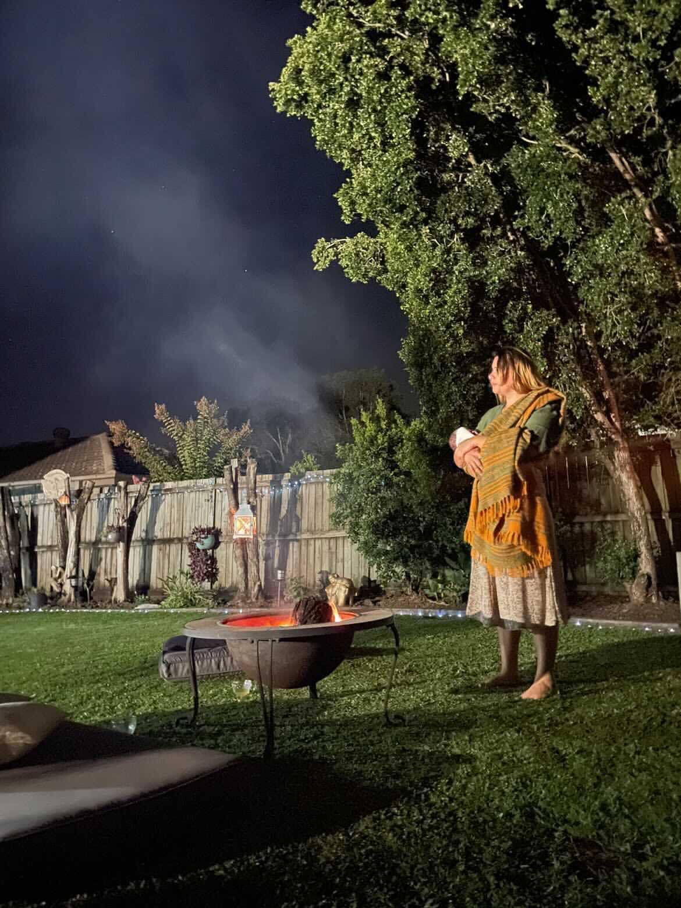

Looking for a birth support person? Discover how continuous support can transform your birth experience.
Birth Support
Overall, continuous support during birth leads to a:
25% decrease in the risk of Cesarean; the largest effect was seen with a doula (39% decrease)*
8% increase in the likelihood of a spontaneous vaginal birth; the largest effect was seen with a doula (15% increase)*
10% decrease in the use of any medications for pain relief; the type of person providing continuous support did not make a difference
Shorter labors by 41 minutes on average; there is no data on if the type of person providing continuous support makes a difference
38% decrease in the baby's risk of a low five-minute Apgar score; there is no data on if the type of person makes a difference
31% decrease in the risk of being dissatisfied with the birth experience; reduced with support from a doula, family, or friend (but not hospital staff)
Understanding the Role
Doulas are not medical professionals, and in general, the following tasks are not performed by doulas:
They do not perform clinical tasks such as cervical exams or fetal heart monitoring.
They do not give medical advice or diagnose conditions.
They do not make decisions for the client (medical or otherwise) or pressure the birthing person into certain choices.
They do not take over the role of the partner; instead, they empower and support the partner to be involved.
They do not catch the baby. That is the role of the Mother, or who they choose.
They do not typically change shifts (although some doulas may call in their back-up after 12-24 hours).

Your Dedicated Doula
Read more to learn about how Tessa can support you during pregnancy, labour, and beyond.
Whether you are planning a home birth, a hospital birth, a vaginal birth, or a cesarean section, continuous, non-judgemental support is available to empower your unique journey into motherhood.
Learn About TessaTake the first step towards an empowered birth experience. Reach out to discuss how Tessa can support your journey.
Contact Us